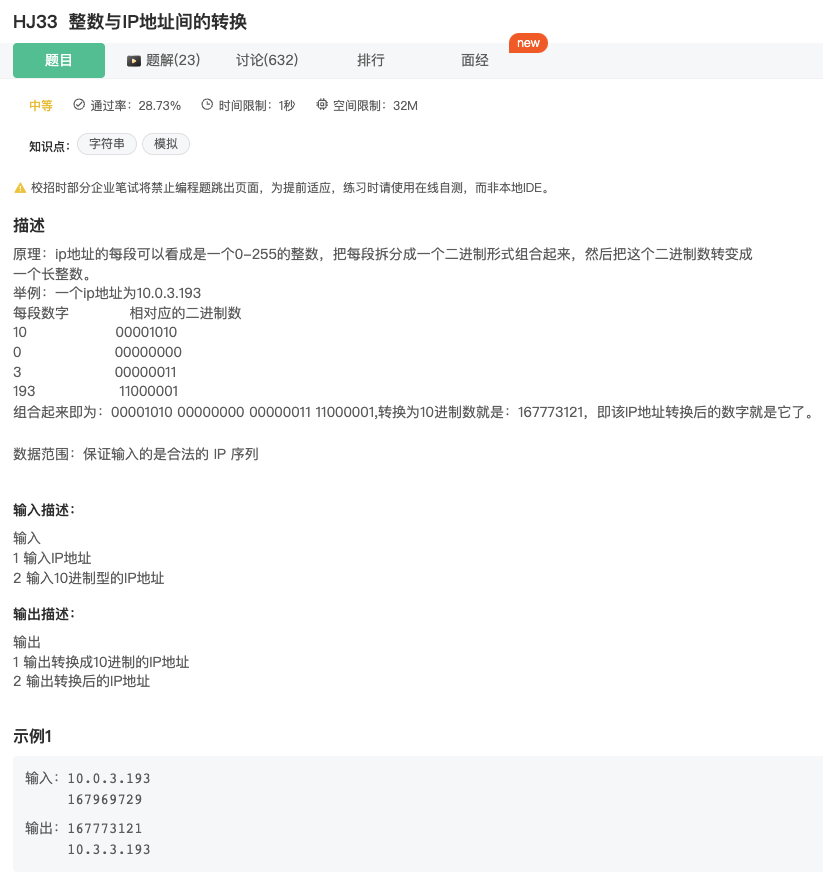
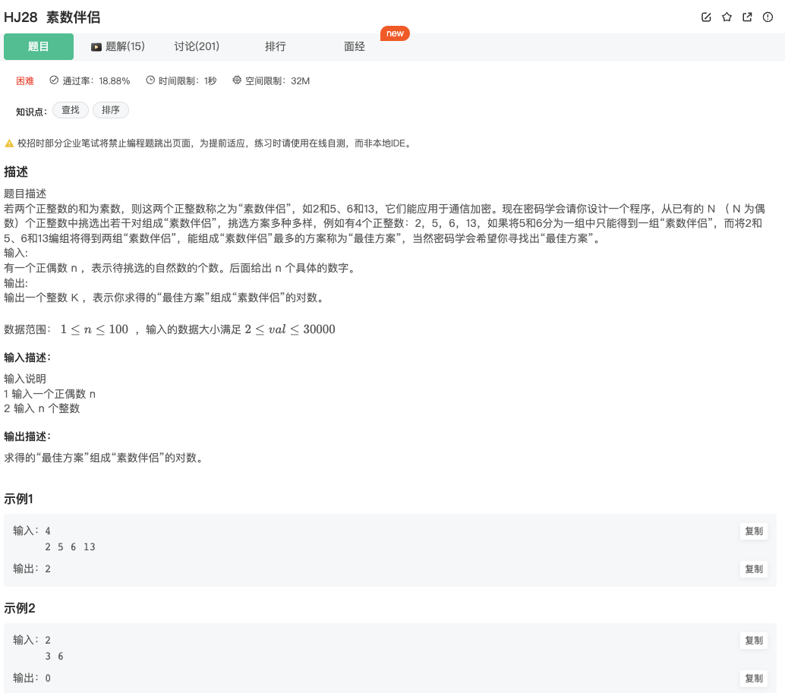
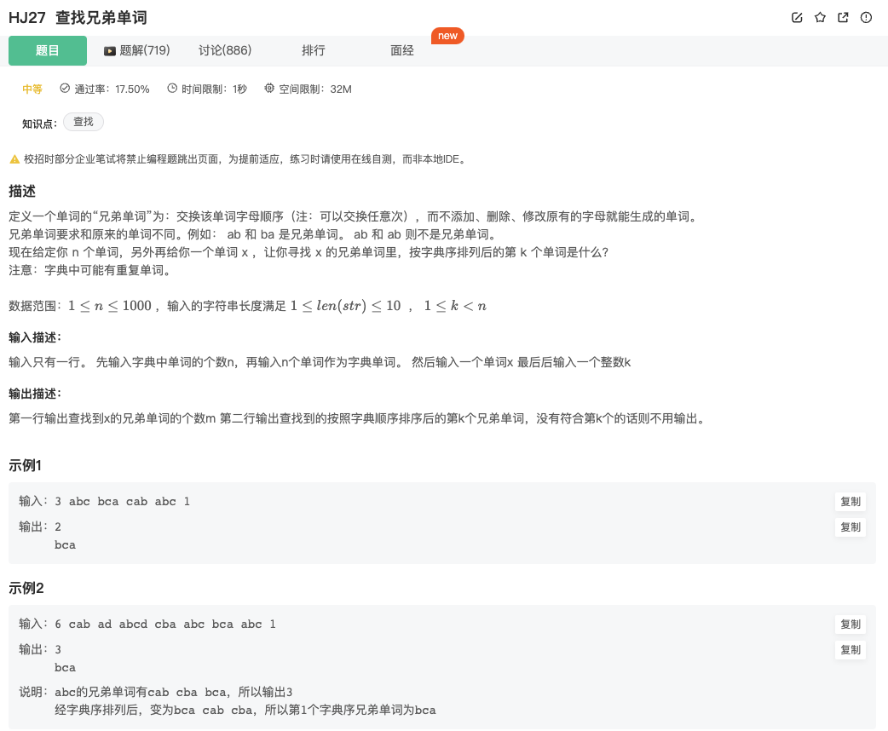
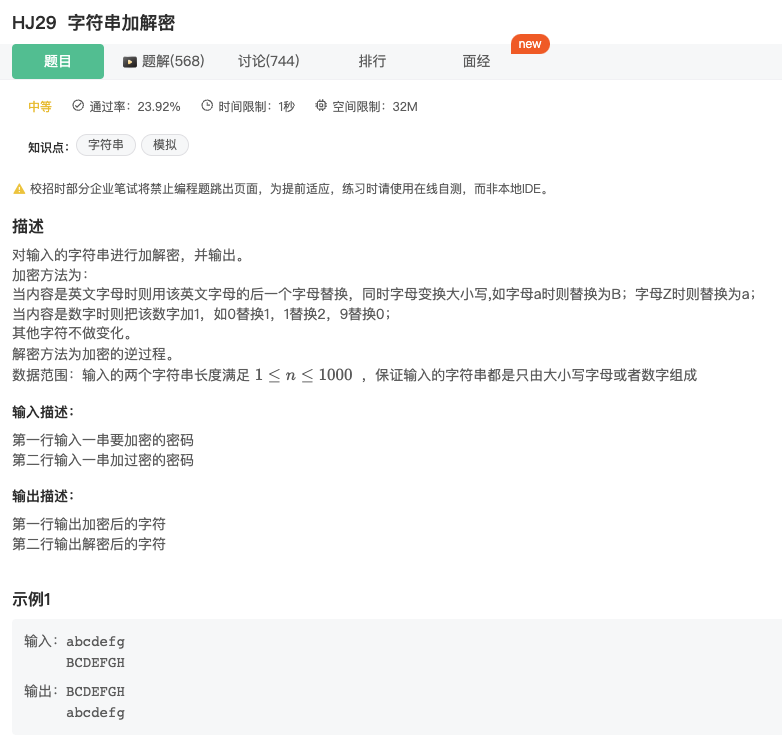
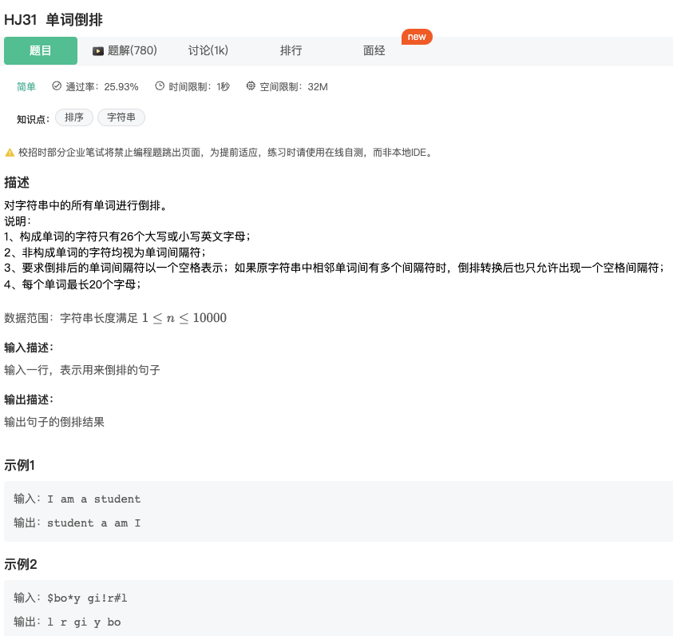

整数与罗马数字的转换

Click to expand the code
class Solution {
public:
// 通过vector穷举了所有的可能性(由于不同的千百十位对应不同的字符,故此穷举最直接)
vector<pair<int, string>> group = {
{1000, "M"},
{900, "CM"},
{500, "D"},
{400, "CD"},
{100, "C"},
{90, "XC"},
{50, "L"},
{40, "XL"},
{10, "X"},
{9, "IX"},
{5, "V"},
{4, "IV"},
{1, "I"},
};//顺序很重要!
string intToRoman(int num) {
string output_str;
// 遍历这个group
for(int i=0;i<group.size();i++)//长度固定因此复杂度为O(1)
{
// 注意遍历是从大到小减的~
while(num>=group[i].first)//通过while循环,取完了,i再变
{
output_str+=group[i].second;
num=num-group[i].first;
}
if(num==0)
break;
}
return output_str;
}
};

跟上面很类似，只是反过来由罗马变为阿拉伯数字而已~
class Solution {
public:
unordered_map<char, int> define_group=//注意是从小到大
{
{'I',1},
{'V',5},
{'X',10},
{'L',50},
{'C',100},
{'D',500},
{'M',1000}
};
int romanToInt(string s) {
int num_value=0;
for(int i=0;i<s.size();i++)
{
// 若字符串的当前位对应的数字小于下一位对应的数字(对应特殊的4,9等等)
if(define_group[s[i]]<define_group[s[i+1]])
{
num_value+=define_group[s[i+1]]-define_group[s[i]];
i=i+1;//当前位和下一位都算了，可以跳过
}
else//反之,则是当前位和下一位相同
num_value+=define_group[s[i]];//直接获取值
}
// num_value=num_value+define_group[s[s.size()-1]];//最后一个加上
return num_value;
}
};
Hash Table
unordered_map内部的元素是无序的，即插入的顺序和输出的顺序不一定相同。而map内部的元素是有序的，它是按照元素的键值大小进行排序，所以它的内部元素是有序的。
定义

合并表记录

Click to expand the code
简单密码

Click to expand the code。关键在于hash table的初始化
string相关的题目
字符串最后一个单词的长度

Click to expand the code，trick：输入为空格的时候就停止输入
计算某字符出现次数

注意不区分大小写，需要调用tolower（）函数转换成小写。时间复杂度为O（N），空间复杂度为O（1）
下面方法采用hash table，也可以，但是空间复杂度应该是O（N），时间复杂度一样
明明的随机数

Click to expand the code。此题的关键是set的使用
字符串分隔

Click to expand the code
进制转换

Click to expand the code。注意16进制就是要乘16次幂（pow(16,n)）。输入的为字符串，每次对比是字符'0'和'9'

此题实际上就是转换为二进制

此题包含了十进制转2进制；2进制转10进制。注意n进制转10进制都是pow（n，第几位）逢n进位，故此满一位就是要乘n。细节的地方主要是分组+0的讨论。
质数/素数及质因数
质数又称素数。一个大于1的自然数，除了1和它自身外，不能被其他自然数整除的数叫做质数

Click to expand the code

此题较难，在做的时候也是根据答案一步一步做的，首先设计了判断是否素数的判据（给出两种写法）。其次这里用递归获取最长的素数伴侣，又涉及到选择与否，更像是回溯算法，稍微有点复杂了～
提取不重复的整数

Click to expand the code
string颠倒：数字颠倒

Click to expand the code
字符串排序

Click to expand the code

这题难度要大很多，关键是构建一个vector，先按字母的顺序存放字母。然后当遇到字母的时候，再次从vector中拿出来（对于同字母的大小写，按输入的顺序进行放入，也按输入的顺序进行取出）。注意通过处理原输入，可以避免处理其他不变的情况
字符串：坐标移动

Click to expand the code
密码验证合格程序

Click to expand the code
删除字符串中出现次数最少的字符

Click to expand the code
查找兄弟单词

Click to expand the code。时间复杂度：O(nlogm)，其中n为单词总数，m为最大单词的长度。logm为排序算法的复杂度。空间复杂度是O（N）
字符串加解密

Click to expand the code。注意循环中用else if不然就会一直处理，一直叠加。
字符串反转

Click to expand the code